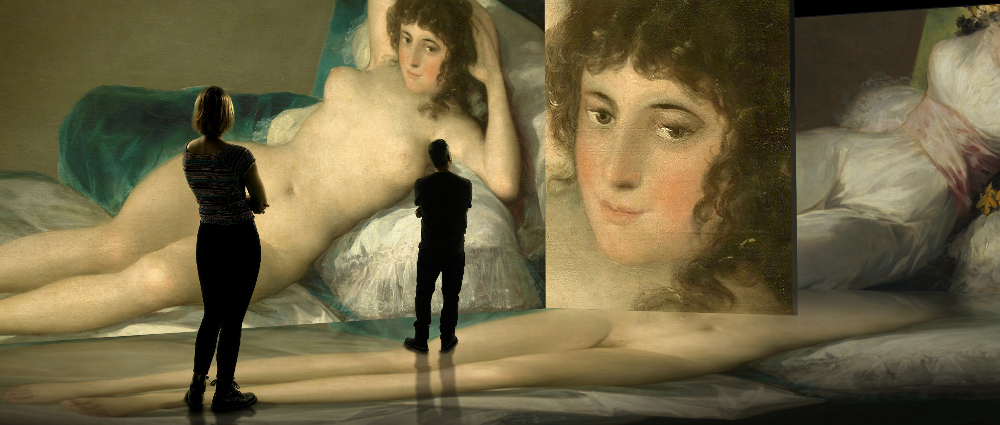

Exposición de Goya
© INSIDE GOYA SL
Del 22 de marzo al 20 de junio
El Palacio de Exposiciones será escenario el próximo marzo del inicio de la gira mundial de la exposición inmersiva #INGOYA, una experiencia en la que se proyectarán mil imágenes de cuadros de Goya sincronizadas con una banda sonora con música de los grandes clásicos españoles. El estreno mundial de esta experiencia será el próximo 22 de marzo, fecha desde la que se proyectarán más de 1.000 imágenes de cuadros del pintor acompañadas de una banda sonora de maestros clásicos españoles como Manuel de Falla e Isaac Albéniz. Esta apuesta por un modelo diferente de exposición coincide con el 275 aniversario del nacimiento del artista.
El espacio y el propio diseño de la muestra contemplan todas las medidas de seguridad necesarias para la prevención de contagios por coronavirus ya que se desarrolla en un amplio recinto con capacidad para 3.000 personas al que accederán un máximo de 120, lo que garantiza que se respete la distancia de seguridad. El recorrido no incluye ningún elemento táctil que suponga la interacción manual con el espectador y el uso de mascarilla será obligatorio. La exposición estará ubicada en el hall del Palacio de Exposiciones y permanecerá abierta hasta junio, con entradas ya a la venta en la web de #INGOYA con precios que oscilan entre los nueve y los doce euros.
#INGOYA es una experiencia de última generación que combina imágenes en gran formato, movimiento y sonidos que envuelven al visitante y le hacen vivir la obra del pintor de una manera única. Este despliegue de tecnología muestra la obra de Goya a través de 40 proyectores de alta definición para exhibir más de mil imágenes sobre 35 pantallas gigantes de cinco metros de altura, todo ello sincronizado con piezas de música clásica española de maestros como Albéniz, Falla, Granados o Boccherini. Esta fusión de arte y tecnología permite realizar un recorrido por la obra de Francisco de Goya que sería imposible llevar a cabo reuniendo obras en formato pictórico, ya que se encuentran dispersas en museos de todo el mundo.